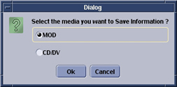

Operating Documentation
Direction 5670000, Rev# 1
Module Version 5.0, Version Date 8/19/08
Operating Documentation |
Launch the Guided Install.
In the left navigation pane, expand Utilities and select SaveRestore.
Click [Save Information & Save GI].
Insert the media you want to use.
In the Dialog window, select the media type, and then click [OK].
Illustration 2: Dialog Window

Once the SaveInfo is complete, remove the media and write the date and time on it.
From the Save/Restore screen, click [Check Information]. See Illustration 1.
Insert the SaveInfo media into the drive.
In the Dialog window, select the media type, and then click [OK].
Once verification is complete, when the system asks if you want to view the log, Click [Yes].